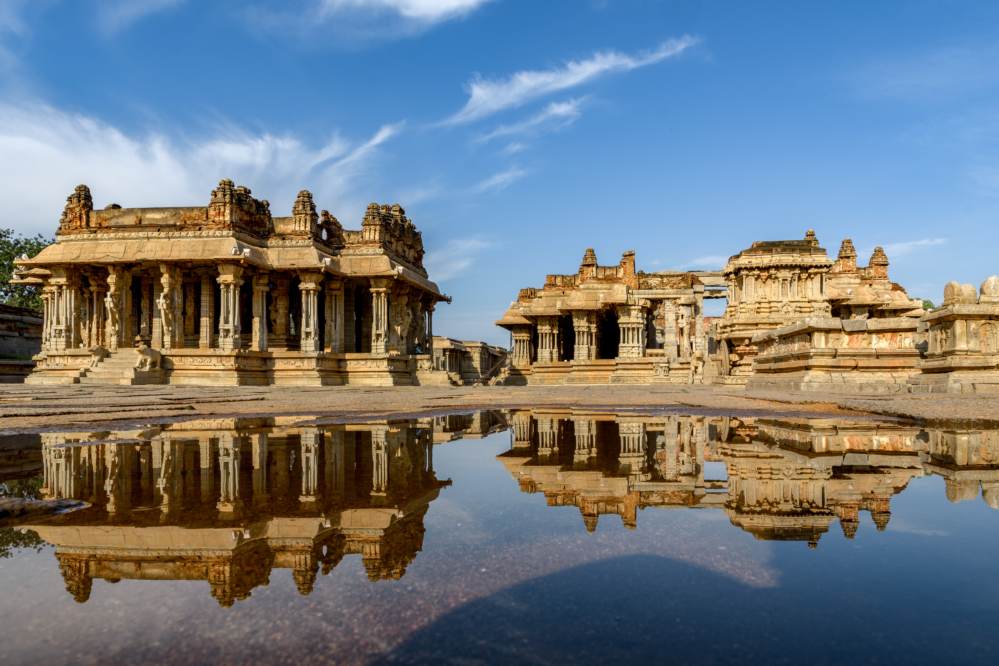
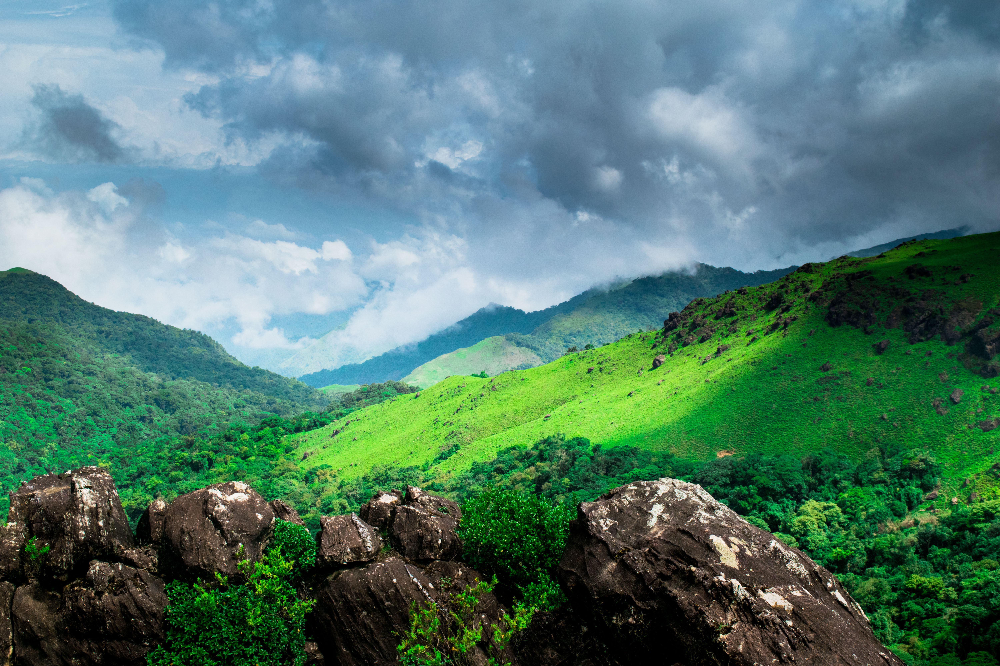
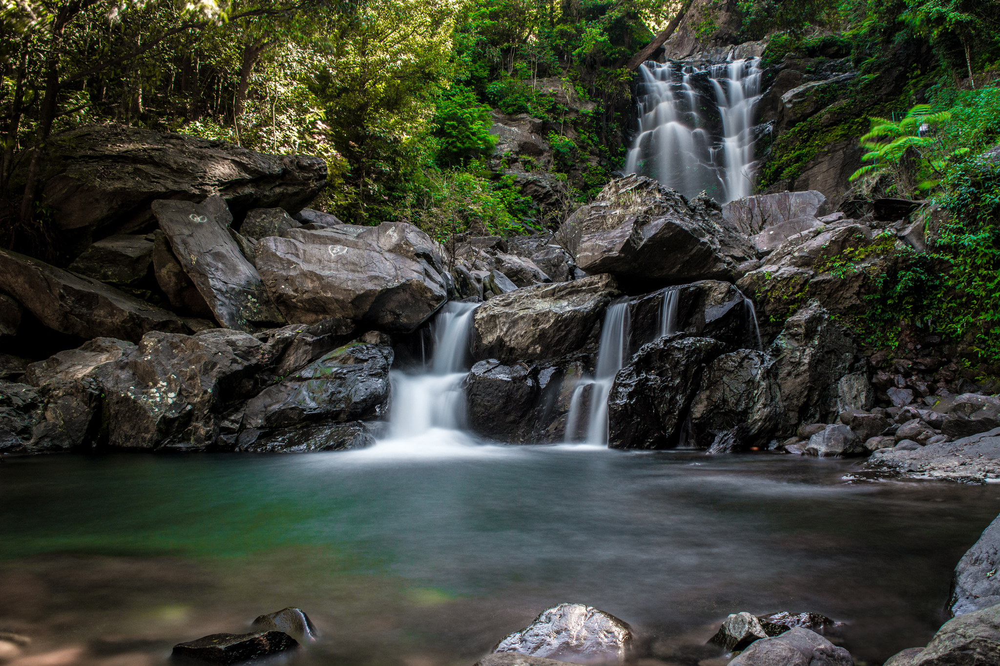
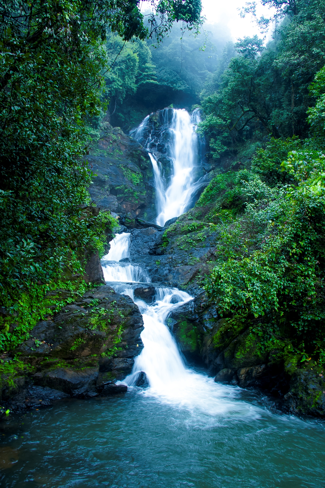
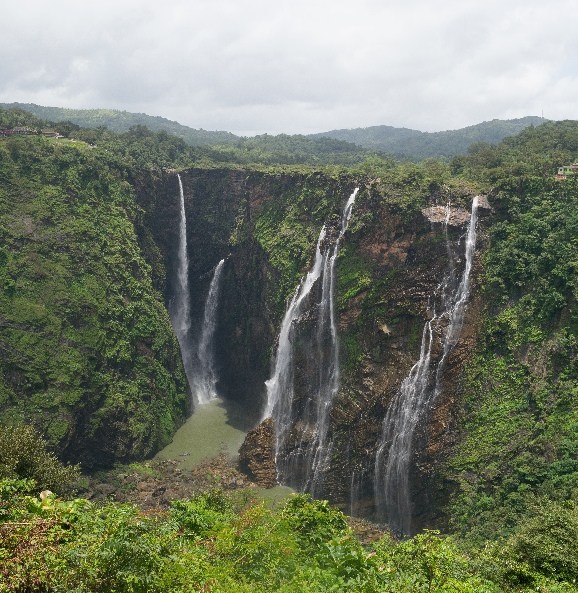

Tourist Places
Mysore Palace

Mysore Palace is one of the most famous tourist attractions in Karnataka.
Hampi

Hampi is famous for its ancient temples, monuments and historical ruins.
Coorg

Coorg is a beautiful hill station known for coffee plantations and green landscapes.
Gokarna

Gokarna is famous for its beautiful beaches and temples.
Chikmagalur

Chikmagalur is known for its hills, coffee plantations and natural beauty.
Jog Falls

Jog Falls is one of the famous waterfalls in Karnataka.